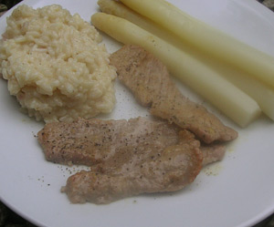

Scaloppine al limone
5 von 6Die Kalbsschnitzel quer halbieren, etwa ½ cm dünn klopfen. Schale der unbehandelten Zitrone fein abreiben, Saftauspressen. Zitronensaft mit 4 EL Olivenöl kräftig verquirlen, mit wenig Pfeffer würzen und abgeriebene Zitronenschale untermischen.
Marinade über die Schnitzel giessen, abgedeckt im Kühlschrank mindestens 1 Std. durchziehen lassen. Zwischendurch einmal wenden.
In einer Pfanne 2 EL Olivenöl verstreichen und erhitzen. Schnitzel aus der Marinade nehmen, gut abtropfen lassen. In die heisse Pfanne geben, von beiden Seiten etwa 2 Min. braten. Herausnehmen und zugedeckt beiseite stellen.
Zitronen-Öl-Marinade in die Pfanne giessen. Zweite Zitrone auspressen, den Saft dazu geben und alles kräftig aufkochen. 1 EL kalte Butter in die Sauce rühren und schmelzen lassen, mit Salz und Pfeffer würzen.
Schnitzel in die Sauce legen und nochmals richtig heiss werden lassen.
Auf vorgewärmten Tellern anrichten, mit der Sauce umgiessen und sofort servieren.
